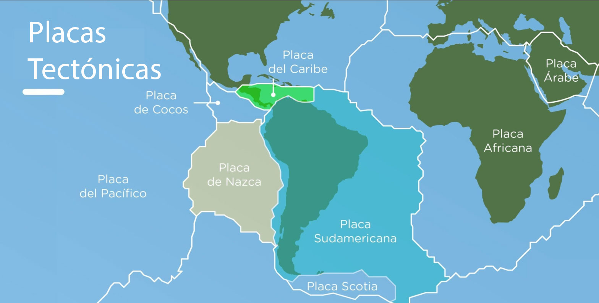

Stack: Python (Pandas, NumPy) | Plotly Express | REST API (USGS GeoJSON)
Diagnóstico estadístico y geoespacial que evalúa la distribución de eventos sísmicos en la interacción de placas tectónicas. El análisis reveló que mientras el Pacífico muestra subducción profunda (183.5 km), la Placa del Caribe presenta una mediana de profundidad de 18.3 km, confirmando la predominancia de fallas de rumbo corticales superficiales (Boconó y San Sebastián).
Mapamundi Interactivo en Tiempo Real
🇻🇪 Contexto Tectónico y Marco Sísmico de Venezuela
Venezuela se encuentra ubicada en una zona de alta complejidad geodinámica, justo en el límite de interacción entre la Placa del Caribe y la Placa Sudamericana. A diferencia de la costa pacífica de Centroamérica (donde domina la subducción de la Placa de Cocos), el sistema venezolano está regido principalmente por un sistema de fallas de rumbo / desplazamiento lateral derecho (transcurrent/strike-slip faults) que absorbe el movimiento relativo de aproximadamente ñ entre ambas placas. PLACA DEL CARIBE ───────► (Movimiento hacia el Este) PLACA SUDAMERICANA ◄─────── (Movimiento hacia el Oeste)

Principales Sistemas de Fallas Activas en Venezuela:
- Falla de Boconó (Región Andina y Centro-Occidente): Atraviesa los estados Táchira, Mérida, Trujillo, Lara y Yaracuy. Es la estructura tectónica más activa del país y responsable de importantes eventos históricos.
- Falla de San Sebastián (Región Central y Costera): Discurre paralela a la línea de costa (Carabobo, Aragua, La Guaira, Distrito Capital y Miranda). Es el límite directo entre la corteza continental y la cuenca marina del Caribe.
- Falla de El Pilar (Región Oriental): Secta los estados Sucre y Monagas hasta el Golfo de Paria y Trinidad. Es una zona de constante liberación de energía por fricción lateral (e.g., Terremoto de Cariaco de 1997 y Yaguaraparo de 2018).
- Falla de Oca-Ancón (Región Occidental): Corta el estado Zulia y Falcón en sentido este-oeste.

Conclusiones y Valor Analítico del Proyecto
El análisis exploratorio de datos sísmicos (vía API del USGS) permitió contrastar la dinámica geofísica entre la cuenca del Pacífico y el Caribe, así como evaluar en detalle la sismicidad regional de Venezuela.
- Divergencia Estructural: Pacífico vs. Caribe
- Cinturón de Fuego del Pacífico: Exhibe una mediana de profundidad de 33.0 Km. y máximos de hasta 183.5 Km. Esto respalda estadísticamente el modelo de subducción de la Placa de Cocos penetrando bajo la litosfera continental.
- Sistema Caribe - Sudamérica: Registra una mediana de profundidad de 18.3 Km. Este comportamiento eminentemente superficial confirma un sistema dominado por fallas de rumbo / transcurrentes en la corteza superior.
- 🇻🇪 Diagnóstico del Evento de Junio de 2026 en Venezuela
- Alineación Tectónica: La cartografía geoespacial evidencia la concentración de sismos en el eje centro-norte (Lara, Yaracuy, Carabobo, Aragua y La Guaira), coincidiendo de forma exacta con la traza de los sistemas de fallas activos de Boconó y San Sebastián.
- Fenómeno de Doblete Sísmico: La ocurrencia consecutiva de eventos con magnitud >= 7.0 a baja profundidad <= 20 Km. demostró el mecanismo de transferencia de estrés elástico instantáneo a lo largo del límite de placas Caribe-Sudamérica.
- Síntesis de Riesgo y Recurrencia Apoyados en la Ley de Gutenberg-Richter, confirmamos que la masa principal de registros diarios corresponde a micro-sismicidad (M <= 4.0). Los eventos de alta magnitud (M>= 7.0) poseen períodos de retorno de varias décadas o siglos, pero su condición superficial en zonas urbanas densamente pobladas representa el mayor factor de exposición y riesgo socio-estructural.
🇻🇪 Mapamundi Interactivo en Tiempo Real
🇵🇦 Complejidad Tectónica y Análisis de profundidad en la Microplaca de Panamá
Stack: Python (Pandas, Requests) | Plotly Express | USGS REST API GeoJSON
Análisis geoespacial del bloque tectónico panameño, delimitado por el Cinturón Deformado del Norte de Panamá (Caribe) y la Zona de Fractura de Panamá (Pacífico). La evaluación de datos sísmicos confirma una mediana de profundidad cortical muy superficial ($< 15\text{ km}$), evidenciando el comportamiento estructural del istmo frente a la compresión de las placas vecinas.
🇵🇦 Complejidad Tectónica y Análisis de Magnitud en Panamá
Stack: Python (Pandas, Requests) | Plotly Express | USGS REST API GeoJSON
Análisis geoespacial del bloque tectónico panameño. En esta visualización, la escala cromática de la leyenda (barra continua) representa la magnitud del evento ($M_w$), variando desde magnitudes moderadas (amarillo) hasta los eventos de mayor energía (rojo intenso). Este mapeo térmico permite identificar rápidamente los focos de mayor concentración de energía en el límite de la Microplaca de Panamá.